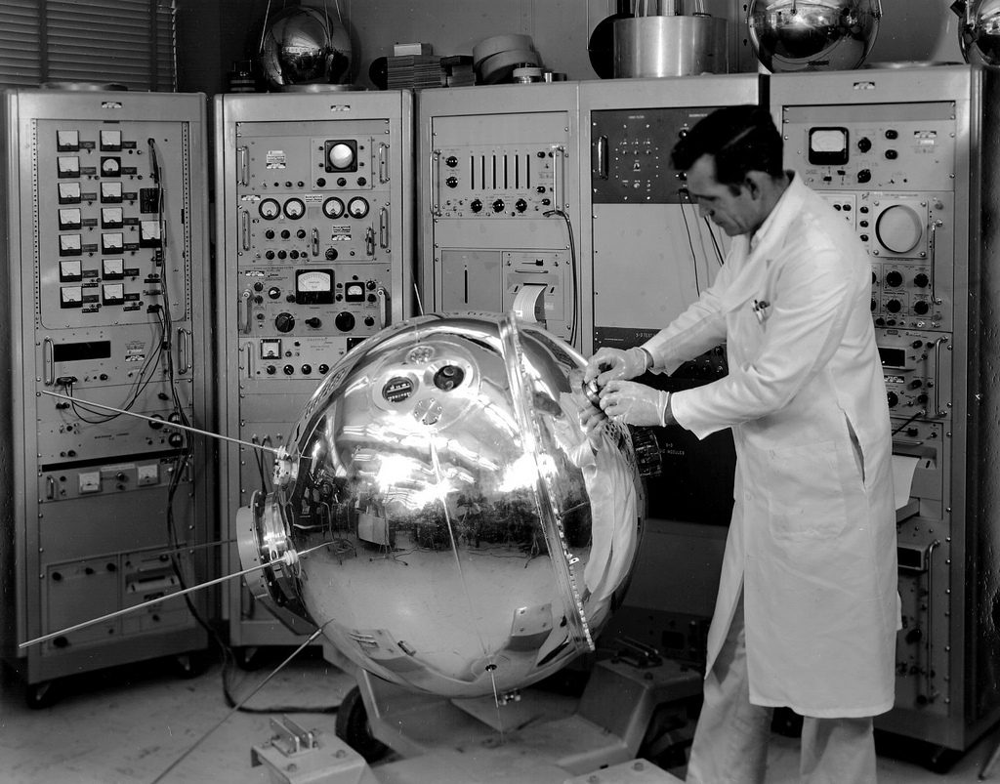
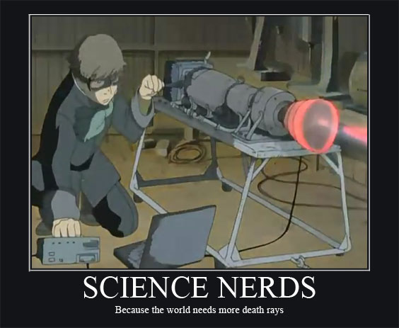
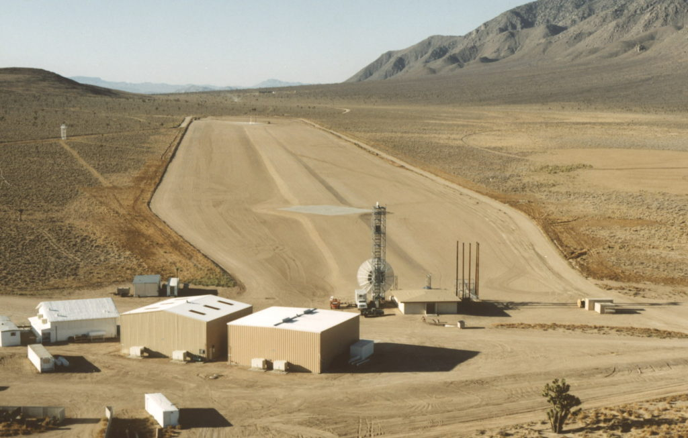
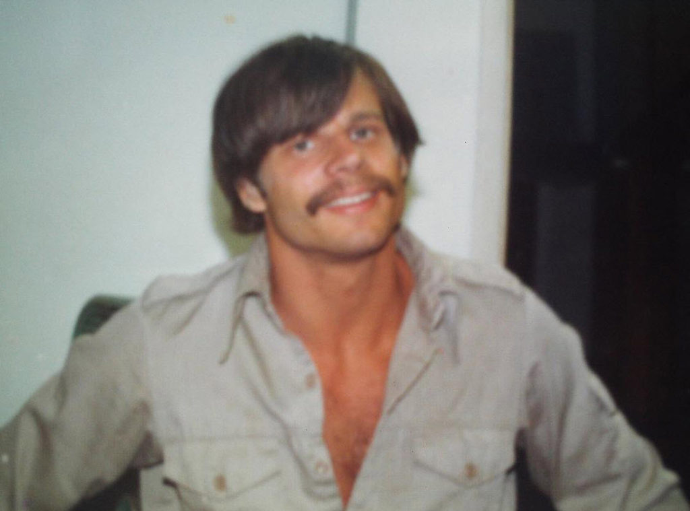
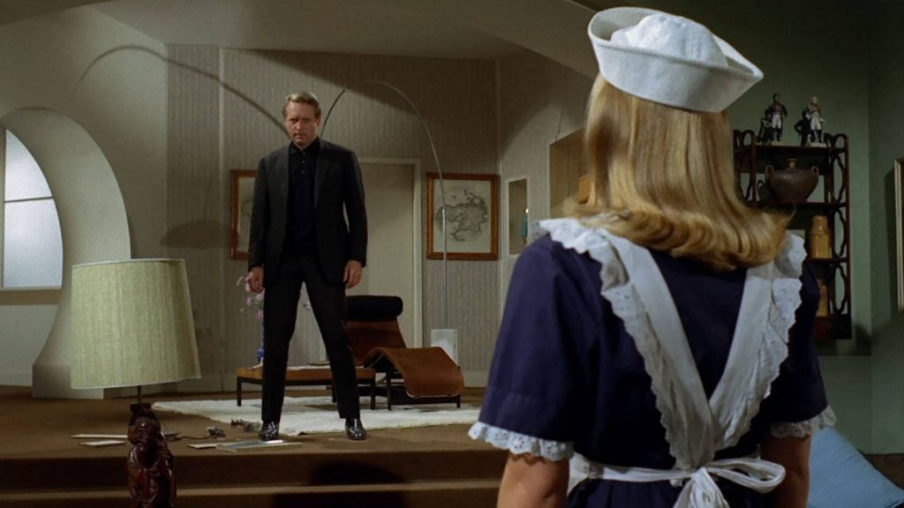

I am an American. I have been an American expat for some time now. I live in communist China (of all places). I’ve been living here for some time, ever since my retirement from MAJestic.
MAJestic is a “black” SAP that lies inside of the ONI (The United States Office of Naval Intelligence).
Childhood
I am quite typical for an American “baby boomer”. I was born in the 1950’s, and I grew up in the 1960’s and 1970’s. I graduated from High School in 1977. So, yes the movie “Dazed and Confused”which took place during Junior year in 1976 actually described what my High School life was like.
I was born into the “Space Age”, and all of us were rushing to get into space. You know, we just had to best those pesky “Commies”. As such, and to help clarify the world at that time, consider our culture. During that time there were two predominant themes in American media; [1] fight communism, and [2] explore space.
Bombarded with popular television shows that either depicted smiling soldiers joyously bayoneting dastardly communists, or shows about adventures in the deep reaches of space, we were provided with choices on our futures.
The world outside of our little town was explained to us through television. It was through this medium that we learned how great America was, and how lucky we were to be born in the greatest nation on the earth. We learned about the dangers of the “Red Menace” and the horrors of socialism. We also learned how adventures into space with unify mankind and expose us to the wonders of the universe.
.
I, like many of my generation, fully wanted to be one of elite; an astronaut.
“I shall remain on Mars and read a book.” ― Ray Bradbury, The Illustrated Man
Those who wanted to go to war eventually either enlisted in the military or went into politics. Luckily, the current crop of war-mongering power-hungry elitists are being phased out. They are either retiring, dying off, or mending their nests in Congress.
Ode to Diabolical Cretin John McCain
Going into space was the more difficult path.
It looked so easy on television. You go to the recruiting office and signed up for the “Space Patrol”. Then, you were “in”. It was just a matter of having the brains and the stamina to persevere. But you know, it’s not that easy a thing to do.
Especially, most especially, if you came from the hills of Western Pennsylvania.
My entire childhood was spent wishing and dreaming about becoming a spaceman. I earnestly believed that I “had what it takes” to travel the stars. I studied hard. I worked hard to save up my money to go to university. I took the classes to qualify for the academy. I did everything that I could think of.
High School – Work & Study
For me, there just wasn’t that many opportunities. I lived in a small town on the banks of the Allegheny river. Pittsburgh was a two hour drive away.
So I did what I could.
I took heavy science courses. I studied a foreign language in detail. I would study hard and then would work hard. Saving up every single penny that I earned so that I could attend college.
You know, it wasn’t easy getting a scholarship and at that time, loans were not so easy to get. Then, as now, you needed “political pull” to be able to qualify for the few opportunities for financial support.
So, in those days, I had to pay for the schooling myself. While my parents helped (a lot), I still needed to support myself.
Learning during my 1970s High School years
Yes, I studied hard. I worked hard, and I saved up all of my money so I could go to college.
Yes it’s true, I studied hard.
In fact, I was at the top of my class in everything. Well, everything except gym class.
(That was because I worked after school and thus could not participate in "extracurricular activities". Thus my grades for "gym class" were always "B's". That grade, on a report card, of all "A's" was a stain on my otherwise perfect scholastic efforts.)
But, you see, I HAD to work.
I needed to pay for my secondary education, and I needed to be able to sleep in a dorm and eat food. Though, for a while it was “touch and go” with tomato soup and ramen noodles with peanut butter.
I worked where I could be employed. I worked in the steel mills, and I worked in the coal mines. It was hot, dirty and often stressful work with long hours and constant belittling by the older men.
.
I did work hard.
I really did. I worked in the coal mines, labored in the steel mills and took a hell of a lot of shit from assholes to achieve my dream. I was the young kid, and I ended doing all the “dirty” and grunt work in the mines. It was not fun and certainly not pleasant. But I was able to save, and I was able to get accepted in a major university.
https://metallicman.com/laoban4site/what-work-was-like-in-the-1960s-and-1970s./
University – Aerospace Engineering
So yeah… After I tied for a slot in the Air Force Academy, and lost out by a coin flip, I was forced to go to a school where I had to cough up the full tuition myself.
Not an exaggeration. There was one slot for Western Pennsylvania and I actually tied in scores with another fellow. We ended up becoming friends, but he was the one who got the opportunity to go to the Air Force Academy, not me. People! There are no prizes for second place.
Luckily for me, I had the necessary grades.
I scored remarkably well in the SAT and the other qualifying tests. Which was pretty good seeing that I was competing against others who had private tutors, attended SAT cram classes, and (in general) attended far better schools than I could afford, or had access to.
I was accepted to all the schools that I applied to. Every single one of them. Yes, I was accepted at MIT in their aeronautical engineering program.
Yup! MIT accepted me. So, you'd think that (of course) I would go there and become a world-renowned scientist type. Eh?
But, that was only half of the problem. I still had to pay for them.

In case you don’t know, Boston was terribly expensive. For me to attend, I would have had to delay going to school by a year while I continued to save up money.
Also, the MIT aeronautical engineering program concentrated on commercial aircraft design. Not rocket and spacecraft design.
So I decided on a different school. I went to Syracuse University and entered their joint Aerospace-Mechanical engineering program. There I could concentrate on rocket propulsive technologies, avionics, and astrophysics.
And I did. Of course, it took me a while to adapt, and go from a straight "A+" student, to a "B" student. But, over time, I adapted, and excelled. That's how you learn, you know ... though FAILURE.
Yes, I am actually a “Aerospace Engineer” by education. Contemporaneously, it is often referred to as being a “Rocket Scientist”. It’s a nice “party breaker” and I do get my fair share of “eyebrows being raised” when I discuss what I studied in university.
Mad Scientist Explorations

Overall, my goal was to be a vaunted “spaceman”. I wanted to fly into space and meet extraterrestrials.
Don’t laugh. I really did. For me, those “little green men” were real. I grew up thinking and dreaming of space. I was fed a solid diet of Robert Heinlein, Ray Bradberry, and “John Grimes“.
The Rocket (Full Text) A Story by Ray Bradbury
That doesn’t happen by sitting on your butt all day and smunching on pork rinds. You have to be smart, study hard, work hard and have a plan. So, I did. I followed in the EXACT steps of my astronaut heroes before me.
At that time, all of the astronauts had a strong science background AND were members of the military. Mostly they were members of the Air Force or the U.S. Navy. So that was my plan.
It was a simple plan. I would follow in the EXACT footsteps of those astronauts that came before me.
“There were only the great diamonds and sapphires and emerald mists and velvet inks of space, with God's voice mingling among the crystal fires.” ― Ray Bradbury, The Illustrated Man
Naval Aviation
So, after battery after battery of tests and evaluations, I was accepted by the United States Navy to fly high performance jet aircraft. I was accepted in my Junior year in college as a NFO. Then, after seeing the results of perception and cognitive tests, I was given a genuine pilot slot.
That’s I had finally made it.
I wasn’t about to let anyone take that from me. I was beyond having my “foot in the door”. I was inside the fence and walking about on the base. Yes, I was there and with the rest of my class we were in training as Naval Aviators.
Oh, baby!
Enter MAJestic
It was during my Naval Aviator training, while in the Navy, that I was offered a position within MAJestic.
The “Sales Pitch” Used to Ask Naval Aviators to Give Up Everything for MAJestic
One sunny Monday, I was called out and escorted to the Base Commander’s office with another AOC. Together he took us to a specialized restricted location on the base, and offered us a role of a lifetime.
He offered us a special role within a unacknowledged (and “waved”) SAP “carve out” known as MAJestic. He was way short on particulars. However he did say that it would change us.
Oh, boy! What a ride it’s been!
I accepted.
My role was such that I could no longer follow the path that I had set in motion. I had to follow a new path.
Training and Modification
I exited the Navy, resigned my commission, and went through specialized “training” at NAS China Lake in California.
Probe Calibration and World-line Training (Part One)
Probe Calibration and World-line Training (Part Two)
This is a major Research & Development facility located in the Western Mojave Desert region of California, approximately 150 miles north of Los Angeles. Occupying three counties – Kern, San Bernardino and Inyo – the installation’s closest neighbors are the cities of Ridgecrest, Inyokern, Trona and Darwin.
There, I underwent “training” and “calibration” there for my role within MAJestic.

The “training” was totally unlike anything that I expected. An entirely new world was opened up for me.
I was introduced to the reality of the MWI.
For those of you who do not know what that means, it refers to the understanding that there are many different realities; many different world-lines. And, our consciousness occupies one world-line. But, that there are many others; an infinity of different world-lines.
As such, I was provided with certain operations and probes (placed within my brain). This enables me to alter my reality; my world-line. Further, I was provided with training that permitted me to do certain tasks associated with my objectives.
Probe insertion and implantation occurred at two facilities. Training was conducted on the base.
Stuff your eyes with wonder . . . live as if you'd drop dead in ten seconds. See the world. It's more fantastic than any dream made or paid for in factories.
-RAY BRADBURY, Fahrenheit 451
My Role
No one ever told me anything. However, over the years, I have been able to piece together what the project was and my role in it.

You might say that I was a kind of ambassador to benefactor entities. Which is way, way off what the role actually was. Perhaps it might be better to simply say that I was their “eyes and ears on the street“.
- The EBP was for their utility.
- The ELF was for MAJestic monitoring, control and access.
It’s all kind of silly, really. The crazy idea that we can somehow understand the motives, intentions and belief structures of a species that is so terribly different from us. Yet, that’s sort of what drove this entire program.
And myself, well I had one foot in the door of one reality, and the other foot in the door of something really, really different.
Off on my own – as promised.
After training was completed, I was left to live life as a “normal” person. Yet, I was anything BUT “normal”.
While everyone else, all the “normals”, were toiling away on their world-line. Mine was constantly changing, shifting, jumping and sliding about. It was unlike any Hollywood movie could even imagine. I was living a life that was friggin’ amazing.
In a way, though, this was kind of a bummer. I fully expected to be a full-time member of MAJestic and get paid for doing so. You know, 007-style.
You get money deposited into your bank account automatically like Hillary Clinton or the (Reverend) Jessie Jackson, and you show up on top-secret restricted military bases. People salute you, and you are provided with all kinds of cool gadgets. Like a flamethrower cigarette lighter, or a car with an ejection seat, or a set of eyeglasses that gives you x-ray vision.
But that was not how it works.
That is not how it works.
It is not, NOT, not how it works.
Once you volunteer for MAJestic (at least in my role) you don’t work or even live like a “normal” person. Your body occupies two realities (depending on your role).
Part of it is entangled with “the organization”, and the rest is your “normal” human existence. You don’t NEED all that “stuff” that Hollywood wants to equip their actors with. You can dance rings around the problems that confront you. As you now have control over your MWI. So yes, like all MAJestic members…
I lived a dual life.
Now, I really can’t go into too much detail about what went on, and how my thoughts connect to the MWI.
It’s one big mess that is way, way beyond the comprehension of most people. For now, let’s just leave it simple and say that I was provided with a two way communication channel with “other” entities, who lived within a reality that was bigger in scope than what we, as humans, experience.
Crazy, yes, but beautiful too.
While I lived a “normal” life on the earth and within the industry, I was also living a “shadow” life within MAJestic. But, you know, there really wasn’t anything secret about it, at least not in the way that Hollywood describes it. Sure, I was connected to another organization.
I was a Participant
I was a “participant”, and you might even go as far as to call me an “ambassador” of sorts.
- I lived a “normal” and average life in corporate America.
- I was part of the MAJestic organization and had an important role within it.
I wish that I could layout the role and relationship to the reader, but it really is so far beyond the human experience that it would take a book to explain. For now, just please believe me that it is just a totally different way that the mind connects to our reality. Instead, I am connected to multiple realities simultaneously.


Two Roles
I had two roles. One was my public “face”. I was an Engineer and worked in American industry as a “normal” Joe. The other was private. I existed at the pleasure of MAJestic and our “benefactors”.
Anyways, being so connected, I performed my MAJestic roles, AND I lived life as a normal guy. That’s the way it works, you know. It’s not Hollywood. It’s real life.
Anyways… I am a “Rocket Scientist” right?
I leveraged my skills, and worked to put food on the table and gas in my car. Yes. I worked as an engineer during the layoffs, supersized, downsizes, resizes, corporate takeovers, hostile takeovers, and the various market fluxes that America has gone through over the last four decades.
My best times were for small companies but they often did not survive. For the large companies many people were let go in hard times though and many were good workers with the wrong politics. Too many times people got hit by an assassins bullet they did not expect. Hard times may bring out the best in people but normally I’ve only seen brutal survival actions and exercised vendettas. In most cases, I can assure you, that if you are not popular or may be a threat you will be a target at the first opportunity and this is more true the higher you go.
I was normal. I lived life. I experienced both the good and bad that all Americans experience.
All the while, everything that I experienced, everything that happened, and all those around me were being observed and monitored by “others”.
They “measured” the human experience within America and changed it as they saw fit.
As such, I had to be “typical”. That was my role.
If an opportunity came my way, my reality would be reset so that it would not “pollute” my role. If there was something that I wanted to do, that was outside the “average” human experience, then you can count on someone trying to ban it, outlaw it, or tax it into oblivion. My life could never be permitted to deviate from the apparent norm.
I guess, you could say that I was the eyes and ears for “others”.
That was part of my role, don’t you know. Other, ahem, entities had their reasons for learning about the human existence.
MAJestic Retirement
Now, exactly thirty years to the month when I joined the organization, I was retired.
It was NOT a fun experience. If I were to know that I would experience such an event, I would have never joined MAJestic. But you see, since the program was so secret, no one knew what I was capable of.
Those “in the know” did not have knowledge of who I was, or what my role was. They had to assume the worst.
They had to assume the worst.
I had to be retired, and I had to be monitored. Least, I go MK-Ultra or Jason Bourne on America. Yikes!
They had to assume the worst.

Anyways, I went through the full “shut down” sequence, and was fully “retired”. My support group disbanded. My probes were mothballed, and the settings rebooted to a dormant state.
I was put in a monitoring program, like all retired (Core two) MAJestic members.
Yah, it’s true, but something happened.
Our extraterrestrial benefactors decided they had another role for me. So, while I was “retired” on paper, my communication channels still remained open and active. I am still a functioning node. Even though, according to the United States government, I have been successfully retired and put in a monitoring program like all members are.
This is my final role in the organization.
I am tasked with a limited disclosure of some of what I am permitted to discuss.
You won’t find me filling your mind with bullshit about those pesky reptilians, or talking about the healing energies of crystals given to us from “the enlightened ones”. Instead, you’ll have to wade though my own personal opinions… opinions that were formed over thirty years of close entangled association with our extraterrestrial benefactors.
As well as the knowledge and perceptions that I picked up though my mission operations.

Enjoy the ride while it’s up and running.
I will shut this friggin’ thing down in a New York Minute as soon as I’m given the ok. So, for now, enjoy.
John McClane: Do you know what you get for being a hero?
Nothin'.
You get shot at. Pat on the back, blah blah blah.
'Attaboy.'
You get divorced...
Your wife can't remember your last name, kids don't want to talk to you...
You get to eat a lot of meals by yourself.
Trust me kid, nobody wants to be that guy.
(I do this) because there is nobody else to do it right now.
Believe me if there was somebody else to do it, I would let them do it.
There's not, so (I'm) doing it.
That's what makes you that guy."
I am doing this, because there is nobody else to do it right now.
MAJestic Related Posts – Training
These are posts and articles that revolve around how I was recruited for MAJestic and my training. Also discussed is the nature of secret programs. I really do not know why the organization was kept so secret. It really wasn’t because of any kind of military concern, and the technologies were way too involved for any kind of information transfer. The only conclusion that I can come to is that we were obligated to maintain secrecy at the behalf of our extraterrestrial benefactors.


MAJestic Related Posts – Our Universe
These particular posts are concerned about the universe that we are all part of. Being entangled as I was, and involved in the crazy things that I was, I was given some insight. This insight wasn’t anything super special. Rather it offered me perception along with advantage. Here, I try to impart some of that knowledge through discussion.
Enjoy.


MAJestic Related Posts – World-Line Travel
These posts are related to “reality slides”. Other more common terms are “world-line travel”, or the MWI. What people fail to grasp is that when a person has the ability to slide into a different reality (pass into a different world-line), they are able to “touch” Heaven to some extent. Here are posts that cover this topic.


John Titor Related Posts
Another person, collectively known by the identity of “John Titor” claimed to utilize world-line (MWI egress) travel to collect artifacts from the past. He is an interesting subject to discuss. Here we have multiple posts in this regard.
They are;

Articles & Links
You’ll not find any big banners or popups here talking about cookies and privacy notices. There are no ads on this site (aside from the hosting ads – a necessary evil). Functionally and fundamentally, I just don’t make money off of this blog. It is NOT monetized. Finally, I don’t track you because I just don’t care to.
To go to the MAIN Index;
- You can start reading the articles by going HERE.
- You can visit the Index Page HERE to explore by article subject.
- You can also ask the author some questions. You can go HERE .
- You can find out more about the author HERE.
- If you have concerns or complaints, you can go HERE.
- If you want to make a donation, you can go HERE.
Please kindly help me out in this effort. There is a lot of effort that goes into this disclosure. I could use all the financial support that anyone could provide. Thank you very much.
[wp_paypal_payment]